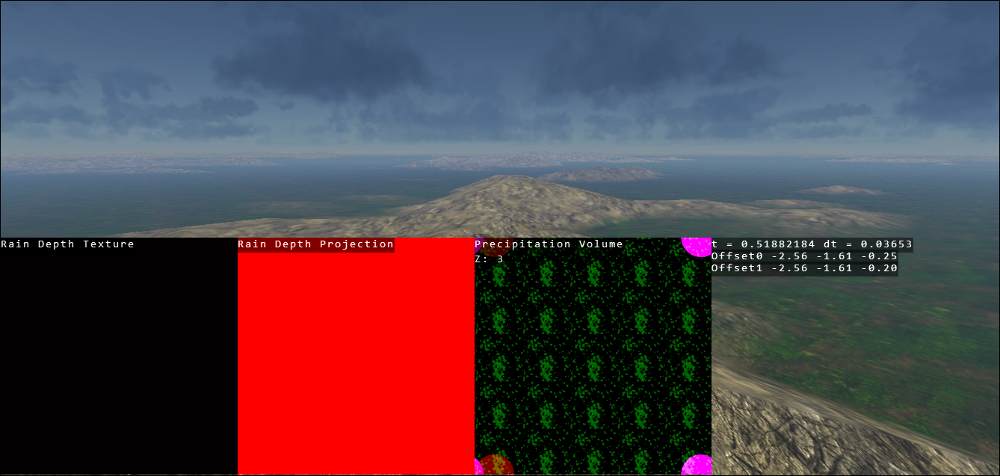
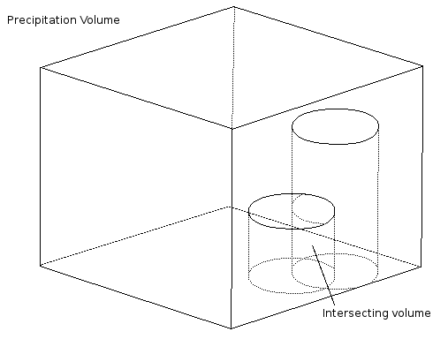

How it works¶
Multi-Layer Precipitation and Precipitation Volume¶
With trueSKY 4.2’s introduction of multiple cloud layers, the precipitation generation system has now changed to allow multiple layers of precipitation to interact with each other. The old Rain Map has been replaced with a precipitation volume texture defining the precipitation at any altitude and position. The 2D precipitation regions and/or cloud mask textures are drawn as vertically aligned cylinders/prisms in the precipitation volume, ranging from the ground to the base of the cloud layer. The texture encodes the Strength and Rain/Snow values along with a accumulated cloud density value.
Each layer of the precipitation volume can only ‘see’ clouds above itself. This is to calculate the accumulated cloud density value at that specific pixel, consequently the accumulated cloud density value decreases as you ascend through the cloud volume, which will impact the amount of precipitation.
When two precipitation region intersect or overlap each other, the intersecting volume regions mix together. No other set up is required to use multi-layered precipitation, however as this is a recent improvement to trueSKY, we advise using the Rain Texture Overlay for debugging your scene.
 